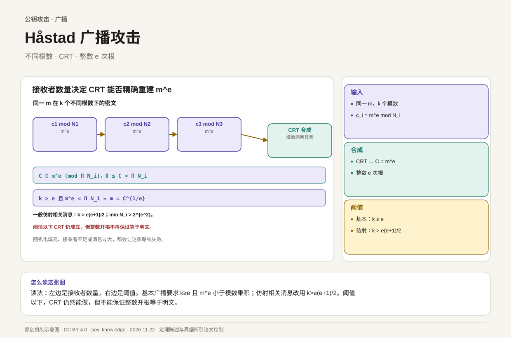
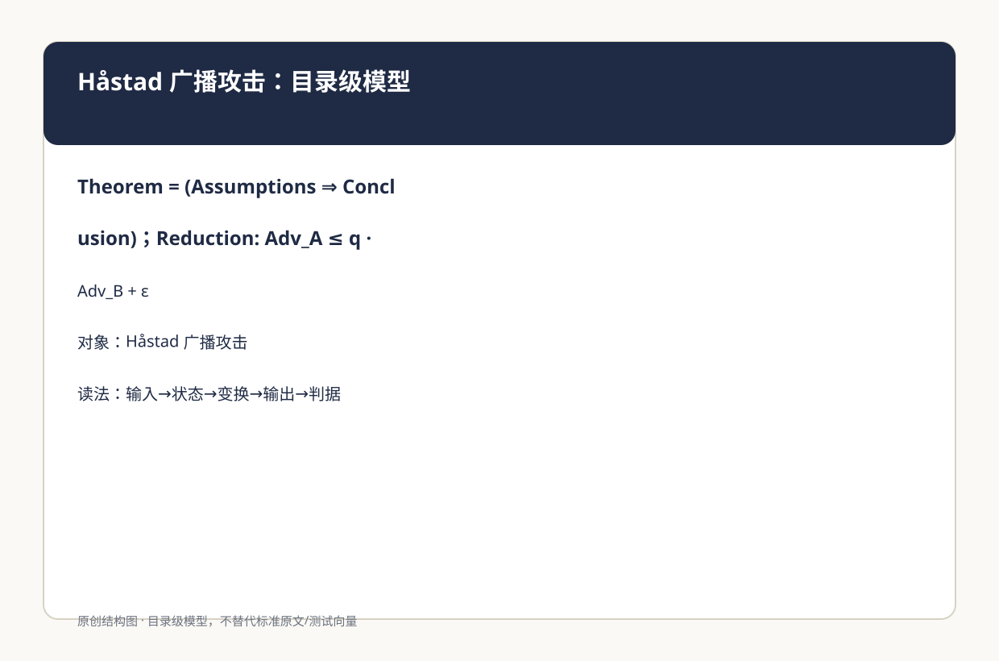

原理与机制
定理：Håstad 广播攻击（Håstad's Broadcast Attack）。### 同一消息广播到多个模数
设消息 m 用同一小指数 e 分别加密给 k 个接收者，模数为两两互素的 N1,…,Nk：
c_i = m^e mod N_i。若 k ≥ e 且 m^e < ∏ N_i，由中国剩余定理可把这些同余式合成
C ≡ m^e (mod ∏ N_i)，且 0 ≤ C < ∏ N_i。因为 m^e 也小于乘积，C 就等于整数 m^e，而不是“模意义下”的幂；对 C 取整数 e 次根即得 m。### 线性相关消息的一般定理
Håstad 1988 的定理处理更一般的情形：第 i 个模数下满足次数 ≤ d 的多项式方程 P_i(x) ≡ 0 (mod n_i)。若方程数 k > d(d+1)/2 且最小模数足够大（论文条件 min n_i > 2^{d^2}），就可在关于 k 与 log n_i 的多项式时间内恢复 x。用于 RSA 时 d=e，因此“仿射相关消息”需要超过 e(e+1)/2 个接收者；这与“同一消息只需 e 个”是两条不同的阈值。### 阈值不是装饰
基本广播攻击的 k≥e 来自 CRT 需要至少 e 个同余式才能把 m^e 放进一个完整乘积；一般定理的 k>d(d+1)/2 来自格与结式消元的维度。把两个阈值混写，会得到错误的安全结论。若填充随机化，m_i 不再满足同一低次多项式，CRT 与整数开根的前提同时消失。

为什么重要
e=3 的 RSA 加密很快，适合资源受限设备；但把同一条消息广播给三个以上接收者，且不做随机化填充，等于把 m^3 放到一个比 m^3 更大的整数环里，攻击者可以用 CRT 精确重建它。Håstad 的一般化说明，即使每条消息不同，只要它们按已知仿射关系变化，足够多的接收者仍会泄露消息。### 为什么随机化填充能挡住
OAEP 等随机化填充让每条消息的编码包含独立随机数，接收者之间的编码不再满足同一个低次多项式。此时 CRT 合成的是不同随机多项式的密文，整数开根不再对应明文。注意“加了填充”不等于“安全”：确定性填充、固定时间戳或可预测计数器仍可能保留关系。### 现实判断
评估广播协议时，先问：是否同一消息？e 是 3 还是 65537？接收者数量是否达到 e？是否每条都独立随机化？模数是否两两互素？这些问题比“RSA 是否 2048 位”更直接。
应用与实例
1.确认同一 e、不同 N_i，且 N_i 两两互素；若不互素，gcd(N_i,N_j) 直接分解，反而更简单。2.收集至少 e 条同一消息的密文；检查 m 是否小于 min N_i，以确保 m^e < ∏ N_i。3.用 CRT 合成 C；对 C 做整数 e 次根；验证结果是否满足所有 c_i。4.若消息是仿射相关而非相同，按 Håstad 一般定理检查 k > e(e+1)/2 与模数下界。5.记录失败原因：填充随机化、接收者不足、消息过大、模数不互素。### 协议设计中的用法
在协议评审中把“广播”视为一种特殊的相关消息场景；对低指数加密要求随机化填充；对群发协议要求每条密文独立编码。测试向量应覆盖 e=3 与 e=65537 两种指数，以及 k=e、k=e+1 的边界。

边界与攻击面
1.接收者少于阈值。基本攻击需要 k≥e；一般仿射定理需要 k>e(e+1)/2。少一个接收者就可能失败。2.m^e 不小于乘积。此时 CRT 得到的 C 只是 m^e mod 乘积，整数开根不再等于 m；需要格方法或其他信息。3.模数不两两互素。CRT 条件破坏；不过这时 gcd 可能直接给出分解，是另一种攻击。4.随机化填充。每条消息的编码不同，低次关系不成立。5.e 很大。阈值和多项式次数随 e 增长；e=65537 时一般仿射攻击的接收者数量不现实。6.消息不是仿射相关。Håstad 的定理要求已知低次多项式；任意关系不保证可解。
历史与背景
Håstad 在 1988 年的 SIAM Journal on Computing 论文中给出“低次模方程组的解”定理，并把它应用于低指数 RSA 广播。论文的条件 k > d(d+1)/2 与 min n_i > 2^{d^2} 成为后来相关消息攻击的标准参数语言。### 与 Coppersmith 路线的关系
1996 年的 Franklin-Reiter 攻击处理同一模数下的相关消息；Håstad 处理不同模数下的广播与仿射关系。1997 年前后，Coppersmith 的小根方法又把“已知部分消息或小根”的问题系统化。三者常被并列，但假设与数学工具不同。
逐步示例与核验
形式模型与复算步骤
[\Pr[\mathrm{Bad}_A(\lambda)]\le \varepsilon(\lambda)]
Håstad 广播攻击的公开参数、密钥/随机数与消息；变量说明：Bad 为归约中定义的失败事件，ε 为可忽略函数。1.定义失败事件。2.构造归约把攻击者转成困难问题求解器。3.证明失败概率上界。边界：公式只覆盖已登记的参数与假设；参数取值、标准版本和实现细节仍以来源为准。
参考出处
- Wikipedia search entry for Håstad 广播攻击. https://zh.wikipedia.org/w/index.php?search=H%C3%A5stad%20%E5%B9%BF%E6%92%AD%E6%94%BB%E5%87%BB
- Handbook of Applied Cryptography (Menezes, van Oorschot, Vanstone). https://www.cacr.math.uwaterloo.ca/hac/